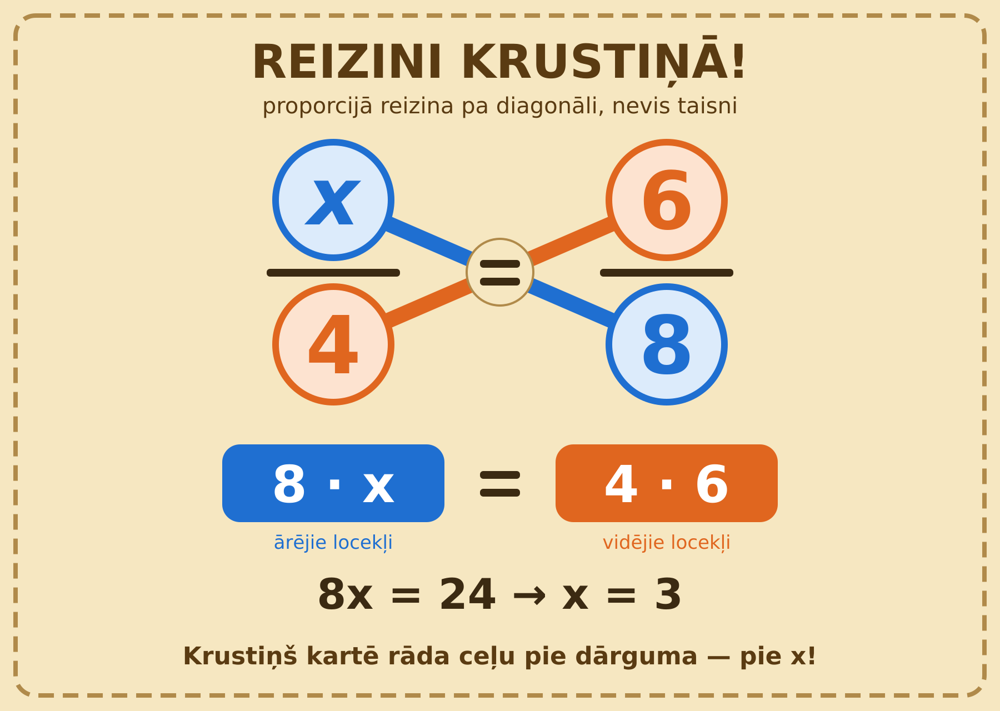

Reizināšana krustiņā (proporcija)
1 / 10Tēma8 daļas
Reizināšana krustiņā (proporcija)
Ja a/b = c/d, tad a · d = b · c
Šajā tēmā
- 1Kas ir proporcija?
- 2Noteikums
- 3Soļi
- 4Piemērs
- 5Piemērs no dzīves
- 6Biežākās kļūdas
- 7Kāpēc tas strādā?
- 8Attēls
Velc vai spied →1 / 10
1Reizināšana krustiņā (proporcija)
Kas ir proporcija?
Divu vienādu daļu (attiecību) vienādība:
a/b = c/d (b ≠ 0, d ≠ 0)
Piemērs: 2/3 = 4/6
Reizināšana krustiņā (proporcija)2 / 10
2Reizināšana krustiņā (proporcija)
Noteikums
Reizinām pa diagonāli — veidojas krustiņš ✕
a · d = b · c
Ārējie locekļi: a un d
Vidējie locekļi: b un c
Ārējo reizinājums = vidējo reizinājums
Reizināšana krustiņā (proporcija)3 / 10
3Reizināšana krustiņā (proporcija)
Soļi
1. Pārliecinies: katrā pusē viena daļa
2. Reizini krustiski
3. Atrisini vienādojumu
4. Pārbaudi, ievietojot atbildi
Reizināšana krustiņā (proporcija)4 / 10
4Reizināšana krustiņā (proporcija)
Piemērs
x/4 = 6/8
8 · x = 4 · 6
8x = 24
x = 3
Pārbaude: 3/4 = 6/8 ✓
Reizināšana krustiņā (proporcija)5 / 10
5Reizināšana krustiņā (proporcija)
Piemērs no dzīves
3 kg ābolu maksā 4,50 €. Cik maksā 5 kg?
3/4,50 = 5/x
3 · x = 4,50 · 5
3x = 22,50
x = 7,50 €
Reizināšana krustiņā (proporcija)6 / 10
6Reizināšana krustiņā (proporcija)
Biežākās kļūdas
Reizina taisni, nevis krustiski
❌ a · c = b · d
✅ a · d = b · c
Lieto, kad tā nav proporcija
❌ x/2 + 1 = 3/4 — kreisajā pusē nav tikai viena daļa, krustiņu uzreiz lietot nevar
Aizmirst iekavas
(x + 1)/3 = 2/5
❌ 5x + 1 = 6
✅ 5(x + 1) = 6 → 5x + 5 = 6 → x = 0,2
Reizināšana krustiņā (proporcija)7 / 10
7Reizināšana krustiņā (proporcija)
Kāpēc tas strādā?
Abas puses reizinām ar b · d:
(a/b) · b · d = (c/d) · b · d
a · d = c · b
Krustiņš ir tikai īsceļš!
Reizināšana krustiņā (proporcija)8 / 10
8Reizināšana krustiņā (proporcija)
Attēls

Reizināšana krustiņā (proporcija)9 / 10